Manual de usuario de OpenQ
OpenQ lleva un espectáculo a partir de una lista de cues. Cada pulsación de GO dispara la siguiente: sonido, vídeo, texto en una pantalla, fundidos, esperas o mensajes a otros equipos. Este manual explica cómo montar una lista de cues, llevarla en directo y controlarla desde otros dispositivos.
OpenQ habla español, gallego e inglés. La primera vez que se abre pregunta el idioma, y se cambia cuando quieras en . Este manual usa los nombres en español de menús, pestañas y botones, por ejemplo ; algunas palabras del oficio, como cue, GO o Fade, se quedan en inglés. Las capturas muestran la interfaz en inglés.
01Primeros pasos
Instalación
OpenQ se compila en tu propio ordenador con su instalador, oqman. Instala lo que necesita la compilación (Rust, un compilador y FFmpeg para el vídeo), compila la versión más reciente y añade OpenQ a tus aplicaciones. La primera instalación tarda unos minutos; las actualizaciones son más rápidas.
| Sistema | Cómo |
|---|---|
| macOS 11 o posterior, Linux | En el Terminal, ejecuta
curl --proto '=https' --tlsv1.2 -fsSL https://github.com/iagonunez/oqman/releases/latest/download/install.sh | sh.
En un Mac sin las Command Line Tools de Apple, macOS pide instalarlas primero; después vuelve a ejecutar la orden.
OpenQ queda en Applications dentro de tu carpeta personal (macOS) o en el menú de aplicaciones (Linux). |
| Windows 10/11 (64 bits) | En PowerShell, ejecuta
powershell -ExecutionPolicy Bypass -c "irm https://github.com/iagonunez/oqman/releases/latest/download/install.ps1 | iex".
Sin las C++ Build Tools de Microsoft, primero se abre su instalador: acéptalo y deja que termine.
Después OpenQ está en el menú Inicio. |
Para obtener una versión más nueva, ejecuta oqman update. Para quitar OpenQ, ejecuta oqman uninstall
(en Windows también puedes usar Configuración → Aplicaciones → Aplicaciones instaladas). Tus espectáculos nunca se tocan.
Para ejecutar una copia en la que estés trabajando desde el código fuente:
cargo run --release # empezar con un espectáculo vacío
cargo run --release -- show.openq # abrir un espectáculo guardadoEste manual viene dentro de OpenQ: elige o pulsa F1 para abrirlo en tu navegador, en el idioma de la interfaz. Funciona sin conexión a internet y siempre corresponde a tu versión de OpenQ.
Tu primer espectáculo
- Arrastra archivos de audio o vídeo desde tu gestor de archivos a la ventana. Cada archivo se convierte en una cue. También puedes usar .
- Añade otras cues desde la barra de herramientas sobre la lista de cues, o pulsa Ctrl+1…0.
- Selecciona una cue y ajusta sus opciones en el inspector, en la parte inferior de la ventana.
- Haz clic en la primera cue para poner el cabezal (playhead) sobre ella y pulsa Espacio (GO).
- Guarda con Ctrl+S. Los espectáculos se guardan como archivos
.openq. Las rutas de los medios se guardan relativas al archivo del espectáculo, así que puedes mover la carpeta del espectáculo entera.
Guarda el archivo del espectáculo en la misma carpeta que sus medios. Así la carpeta se puede copiar a otro ordenador y abrirse allí sin cambios.
02La ventana principal
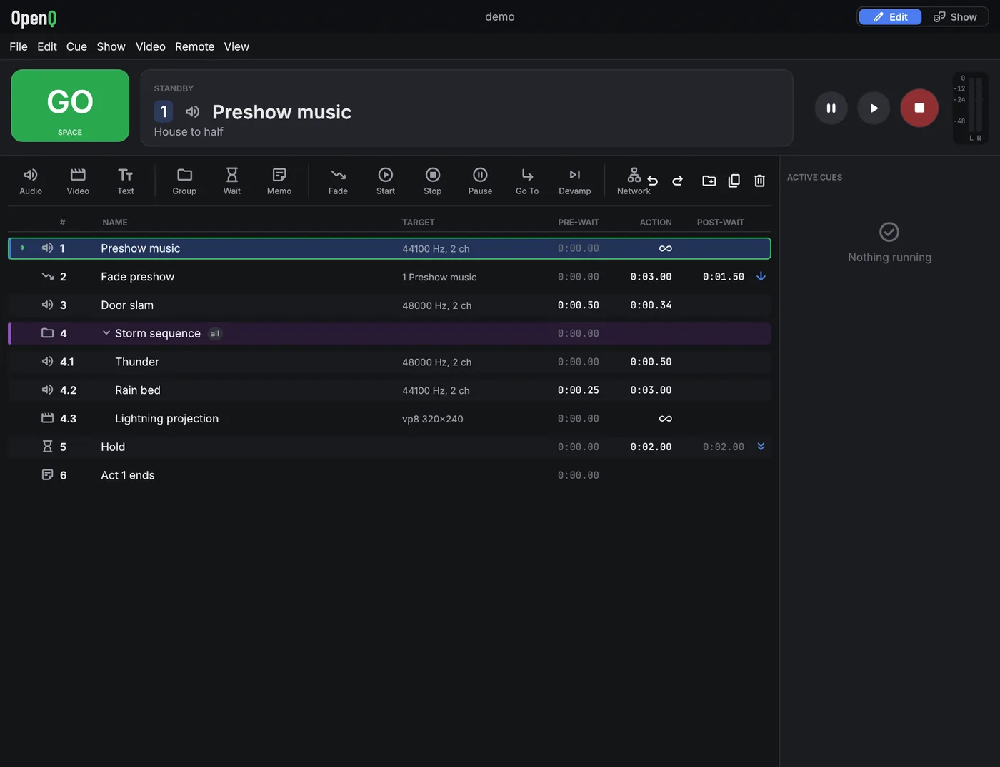
- Barra de título: el nombre del espectáculo (un punto indica cambios sin guardar). En Windows también contiene los botones de minimizar, maximizar y cerrar: arrastra la barra para mover la ventana, haz doble clic para maximizarla y arrastra cualquier borde para cambiar su tamaño.
- Menús: Archivo, Edición, Cue, Función, Vídeo (escenarios y salidas), Remoto, Ver (vista previa de geometría, registro del motor) y Ayuda (este manual, el registro de errores, acerca de y licencias).
- GO dispara la cue que está bajo el cabezal. La tarjeta Standby muestra esa cue, con sus notas debajo para que el operador pueda leerlas antes de pulsar GO.
- Transporte: pausar todo, reanudar todo, parar todo. Al lado, los medidores de salida muestran cada canal del dispositivo en dB.
- Pestañas de listas: una pestaña por lista de cues (ver más abajo).
- Lista de cues: número, nombre, destino (datos del archivo o la cue de destino), pre-espera, tiempo de acción, post-espera y la flecha de continuación. Las cues en marcha se vuelven verdes y su columna de acción hace la cuenta atrás. Un icono rojo marca un archivo o destino que falta. Los archivos se comprueban en segundo plano cada par de segundos, así que una unidad de red lenta nunca congela la ventana, y una unidad que se vuelve a conectar quita el icono por sí sola.
- Cues activas: cada cue en marcha con su tiempo transcurrido y restante, y sus propios botones de pausa y parada.
- Inspector: los ajustes de la cue seleccionada, en pestañas. Cada pestaña agrupa sus ajustes en tarjetas. Se abre con altura suficiente para mostrar una pestaña entera; arrastra su borde superior para cambiar su tamaño.
- Barra de estado: el interruptor Edición / Función a la izquierda, y después el dispositivo de audio, el estado del vídeo, OSC, las conexiones remotas y los mensajes. El botón de la derecha abre los ajustes. Un aviso del motor aparece a su lado durante unos segundos y abre el registro del motor; los mensajes de la parte izquierda de la barra también desaparecen al cabo de unos segundos.
Trabajar con la lista de cues
- Haz clic en una cue para seleccionarla y mover el cabezal a ella. Usa Ctrl-clic para seleccionar varias cues, Mayús-clic para un rango, y ↑ ↓ para mover el cabezal.
- Arrastra las cues para reordenarlas. Suéltalas en el centro de la fila de un grupo para meterlas dentro.
- Haz doble clic en un número, nombre, pre-espera o post-espera para editarlo en el sitio. Intro confirma y Esc cancela.
- Haz clic en la columna de continuación para pasar por no continuar → autocontinuar → autoseguir.
- Haz clic derecho en una fila para iniciar, parar, duplicar, borrar y más.
Listas de cues
Un espectáculo puede tener varias listas de cues, por ejemplo la secuencia principal y una lista de efectos de sonido para disparar a mano. Cada lista tiene una pestaña sobre la barra de herramientas; haz clic en una pestaña para traer esa lista al frente. GO, el cabezal y la tarjeta de espera trabajan sobre la lista del frente, y cada lista recuerda dónde estaba su cabezal.
- Haz clic en para añadir una lista. Haz clic derecho en la pestaña de la lista actual para renombrarla (o doble clic), moverla, ajustar su código de tiempo o borrarla.
- Las cues siguen sonando al cambiar de lista, y las cues Iniciar, Parar, Fade y otras pueden apuntar a cues de cualquier lista. En el menú de destino, las cues de otras listas muestran el nombre de su lista.
- Los números de cue son comunes a todas las listas, así que OSC y los atajos llegan a cues de cualquier lista.
03Modo edición y modo función
El modo edición (Edición) es para montar el espectáculo: todo se puede cambiar. El modo función (Función) es para llevarlo. La lista queda bloqueada, la barra de herramientas y el inspector se ocultan, y las filas se hacen más grandes para leerlas con facilidad en una cabina a oscuras. GO, parar, pausa, los atajos y mover el cabezal funcionan en los dos modos.
Cambia con el interruptor a la izquierda de la barra de estado, , o Ctrl+E.
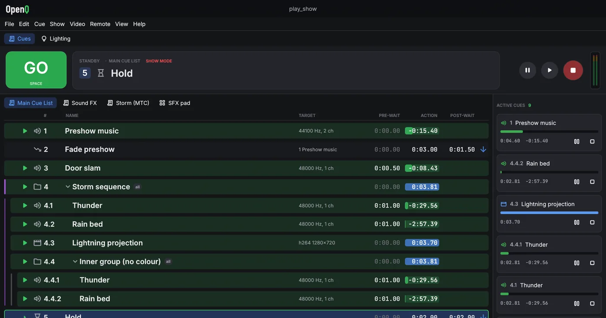
Parar
Esc o el botón rojo de parada funde todo a silencio durante el tiempo de fundido de Parar todo (ver Ajustes). Púlsalo otra vez durante ese fundido para parar al instante.
La protección contra doble GO ignora un segundo GO que llegue muy poco después del primero, para que una tecla que rebota no se salte una cue.
04Tipos de cue
Cada cue tiene un número (texto libre, como 4.2), un nombre, notas,
un color y un interruptor Armada, todo en la pestaña Básico. GO se salta una cue desarmada.
Básico también ajusta la pre-espera, el modo de continuación y la post-espera de la
cue y, para cues de audio y vídeo, el archivo de medios.
La pestaña Disparadores reúne las formas de disparar una cue además de GO: un atajo, una tecla que dispara la cue directamente esté donde esté el cabezal, y un disparador por código de tiempo.
05Tiempos y continuaciones
Cada cue tiene tres tiempos. La pre-espera transcurre entre GO y la acción de la cue. La acción es la cue en sí: un sonido que suena, un fundido en marcha. La post-espera se cuenta desde el inicio de la acción y la usa autocontinuar.
| Modo de continuación | Qué pasa después |
|---|---|
| No continuar | Nada. El cabezal pasa a la siguiente cue y espera a GO. |
| Autocontinuar | La siguiente cue se dispara cuando se agota la post-espera de esta. |
| Autoseguir | La siguiente cue se dispara cuando termina la acción de esta. |
Las cues encadenadas arrancan exactamente en el límite de una muestra, así que una secuencia mantiene su tiempo por mucho que dure.
Grupos
| Modo de grupo | Comportamiento |
|---|---|
| Iniciar la primera hija y entrar en el grupo | Dispara la primera cue del grupo y mete el cabezal dentro. |
| Iniciar la primera hija y pasar a la siguiente cue | Una lista de reproducción: las hijas suenan una tras otra mientras el cabezal pasa más allá del grupo. |
| Iniciar todas las hijas a la vez | Dispara todo lo que contiene a la vez, cada uno con su propia pre-espera. |
| Iniciar una hija al azar y pasar a la siguiente cue | Dispara una hija elegida al azar. |
Selecciona cues y pulsa Ctrl+G para agruparlas. ← y → pliegan y despliegan un grupo.
06Cues de audio
Tiempo y bucles
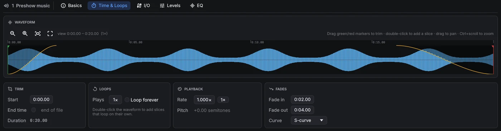
- Recorte: arrastra los marcadores de inicio y fin, o escribe los tiempos. Arrastra la forma de onda para desplazarte y usa Ctrl+rueda para hacer zoom. Una línea muestra la posición de reproducción mientras la cue suena.
- Bucles: fija un número de Repeticiones o marca Bucle infinito para repetir hasta que se pare.
- Reproducción: la velocidad es varispeed. El tono cambia con la velocidad, como en un magnetófono.
- Fundidos: una entrada desde silencio al empezar la cue y una salida a silencio al final, con varias curvas a elegir, sin necesidad de una cue Fade aparte. La salida necesita un final conocido, así que no ocurre mientras la cue se repite indefinidamente; con un fragmento en vamp suena después del Devamp.
- Fragmentos: haz doble clic en la forma de onda para añadir un marcador de fragmento. Arrástralo para
moverlo y haz clic derecho para borrarlo. Cada fragmento suena un número fijo de veces o se repite hasta que una cue
Devamp (o el mensaje OSC
/cue/<n>/devamp) lo libera. Entonces termina la pasada actual y la reproducción sigue. Úsalo para música que tiene que hacer vamp hasta la frase de un actor.
I/O
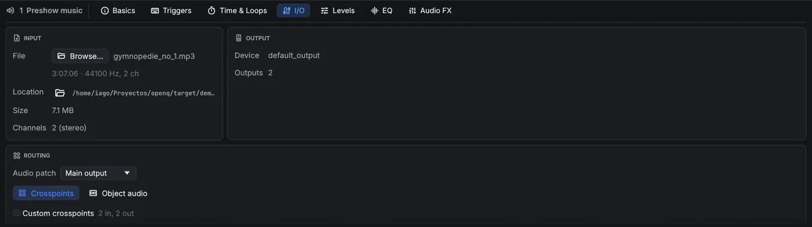
- Entrada: el archivo de medios, con su duración, formato, ubicación en disco (y un botón para mostrarlo en el gestor de archivos), tamaño y número de canales. Examinar… sustituye el archivo.
- Salida: el dispositivo de audio por el que suena la cue y su número de salidas (se ajusta en Ajustes → Audio).
- Enrutado: automático, o una matriz de puntos de cruce de los canales del archivo a las salidas del dispositivo. Cada punto de cruce tiene su propio nivel en dB, así que un archivo estéreo puede alimentar ocho altavoces. O cambia a Audio por objetos y coloca los canales en la sala (más abajo).
Audio por objetos
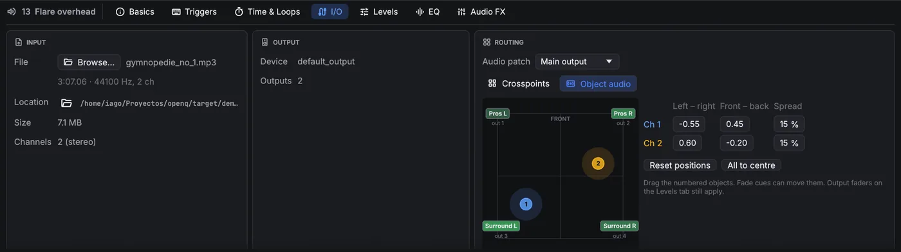
El audio por objetos enruta el sonido según de dónde debe venir en lugar de por salida. Elige Audio por objetos en la tarjeta Enrutado: cada canal del archivo se convierte en un objeto que arrastras por la sala (o cuya posición escribes). Los altavoces más cercanos a un objeto lo reproducen más fuerte; el nivel baja 6 dB cada vez que la distancia se duplica, y la potencia total es la misma esté donde esté el objeto, así que moverlo nunca cambia su volumen. Apertura ensancha un objeto desde un punto (0 %) hasta toda la sala (100 %). Los faders de salida de la pestaña Niveles siguen aplicándose, y las cues Mic y las bandas sonoras de vídeo también pueden usar audio por objetos.
La sala se ajusta una vez por espectáculo en Ajustes → Audio. Una cue Fade puede mover los objetos, para un sonido que vuela por la sala. Los movimientos se suavizan, así que arrastrar un objeto en una cue que suena no produce chasquidos.
Niveles
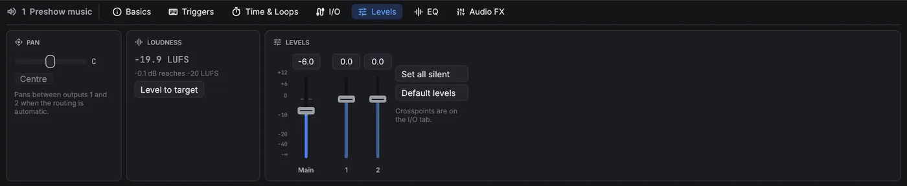
El fader Principal fija el nivel de la cue. A su lado hay un fader por cada salida del dispositivo de audio, que ajusta esa salida después de la matriz de enrutado. Arrastra un fader o escribe un valor en la casilla de encima; haz doble clic en un fader para devolverlo a 0 dB. Panorama mueve el sonido entre las salidas 1 y 2 mientras el enrutado es automático.
EQ
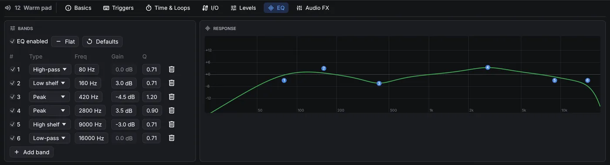
Los tipos de banda son paso alto, shelf de graves, pico, shelf de agudos y paso bajo. EQ activado activa y desactiva todo el ecualizador.
FX de audio
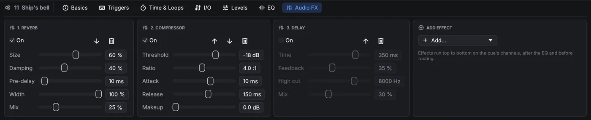
Las cues de audio, Mic y vídeo tienen una pestaña FX de audio: una cadena de hasta ocho efectos que actúan de arriba abajo sobre los canales de la cue, después del EQ y antes del enrutado. Añadir… pone un efecto nuevo al final; las flechas cambian el orden, Encendido puentea un efecto sin perder sus ajustes.
| Efecto | Ajustes | Uso |
|---|---|---|
| Delay | tiempo, realimentación, corte de agudos, mezcla | Ecos; el corte de agudos oscurece cada repetición. |
| Reverberación | tamaño, amortiguación, predelay, ancho, mezcla | Sonido de sala para grabaciones secas o voces. |
| Compresor | umbral, relación, ataque, liberación, compensación | Iguala el nivel; todos los canales se mueven juntos. |
| Limitador | techo, liberación | Nunca deja pasar un pico por encima del techo. |
| Puerta de ruido | umbral, rango, ataque, mantenimiento, liberación | Baja un micrófono entre frases. |
| Distorsión | ganancia, tono, salida, mezcla | Sonidos de radio, de teléfono o saturados. |
| Chorus | velocidad, profundidad, retardo, realimentación, mezcla | Engorda y ensancha un sonido. |
| Bitcrusher | bits, submuestreo, mezcla | Sonidos lo-fi, de videojuego retro. |
Los cambios de nivel, fader de salida, panorama, EQ, efectos, enrutado y objetos se oyen al momento en una cue que suena, así que puedes ajustarlos durante un pase. Las colas de reverb y delay continúan a través de una edición.
Cues Micro
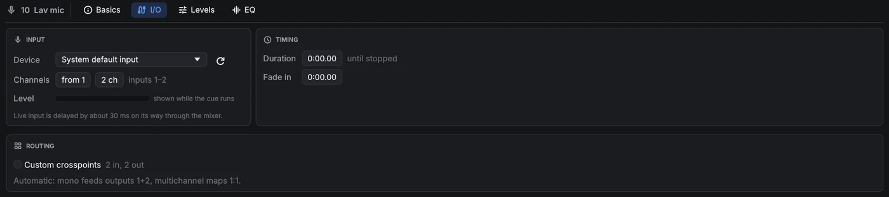
Una cue Micro envía una entrada en directo (un micrófono, una entrada de línea, un reproductor) por el mezclador de OpenQ, así que tiene los mismos faders de Niveles, panorama, EQ y enrutado que una cue de audio, y las cues Fade pueden fundirla. En la pestaña I/O elige el dispositivo de entrada y qué canales usar, por ejemplo las entradas 3–4 para un par estéreo. Una duración de 0 mantiene la entrada abierta hasta que se para la cue, y la entrada en fundido la sube desde silencio. La entrada llega a las salidas con unos 30 ms de retraso, demasiado poco para oírse como eco en la mayoría de salas.
07Cues de vídeo y texto
Una cue de vídeo reproduce una película (todo lo que FFmpeg puede reproducir) o una imagen fija: PNG, JPEG, WebP, GIF, TIFF, BMP o SVG. Las imágenes se muestran durante un tiempo fijo o hasta que se paran. Un SVG se dibuja al tamaño al que se va a mostrar, incluida la mayor escala a la que llegan su geometría y su animación, así que logotipos y dibujos de línea se ven nítidos. Tiempo y bucles tiene recortes de inicio y fin, bucles y Mantener el último fotograma. La pestaña Audio tiene los faders principal y de salida de la banda sonora, e I/O su archivo y enrutado; la banda sonora suena por el mezclador como una cue de audio.
Geometría
- Escenario: a qué salida va la imagen. Sin ninguna, se usa el primer escenario.
- Ajustar: Ajustar muestra la imagen entera (con bandas), Rellenar cubre el escenario y recorta lo que sobra, Estirar lo llena exactamente y Tamaño nativo usa los píxeles propios del archivo.
- Capa (las más altas se dibujan encima) y opacidad.
- Posición, escala y rotación. La posición es un porcentaje del escenario:
X 25%mueve la imagen un cuarto del escenario hacia la derecha. Activa proporcional para escalar los dos ejes a la vez. - Recorte: quita un porcentaje por la izquierda, arriba, derecha y abajo. El resto de la imagen se queda donde estaba.
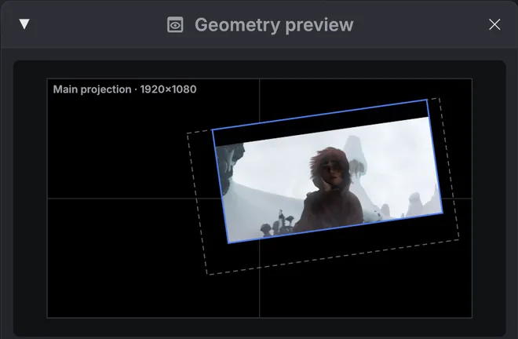
La vista previa de geometría (, o Vista previa en la pestaña Geometría) dibuja el escenario de la cue seleccionada con la imagen en su sitio, sin abrir una salida de proyector. En modo edición, arrastra en la vista previa para mover la imagen, usa la rueda para escalarla y haz doble clic para centrarla. Para una cue Fade que cambia la geometría, la vista previa muestra dónde termina el fundido, con la posición inicial como contorno discontinuo.
Cues Cámara
Una cue Cámara muestra una cámara en directo (una webcam, una capturadora USB o HDMI) como capa en un escenario, con la misma pestaña Geometría que el vídeo: posición, escala, rotación, recorte, opacidad y capa, y las cues Fade pueden moverla y fundirla. En la pestaña Cámara elige el dispositivo y, si lo necesitas, el tamaño de captura; Espejo voltea la imagen como en un selfi. Mostrar durante 0 la mantiene hasta que se pare. El dispositivo y el tamaño se usan la próxima vez que arranque la cue.
Cues Texto
Las cues de texto muestran texto escrito en un escenario: títulos, sobretítulos, subtítulos o una cuenta atrás para el equipo. Las pestañas Geometría y Animación funcionan como en el vídeo, y las cues Fade pueden mover y fundir el texto. Los cambios en la pestaña Texto aparecen al momento en una cue que se está mostrando.
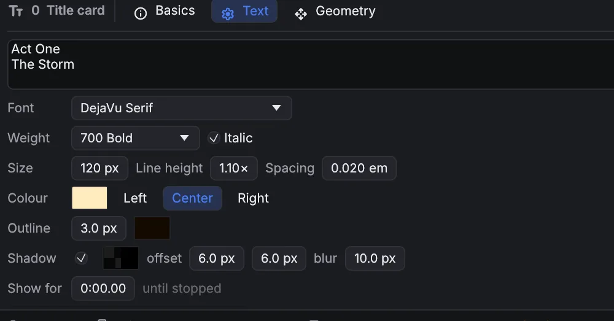
| Ajuste | Qué hace |
|---|---|
| Fuente | Cualquier fuente instalada en el ordenador. Escribe en la lista para buscar. Inter (integrada) está siempre disponible. |
| Peso · Cursiva | De Thin (100) a Black (900). Los pesos que la fuente no incluye aparecen en gris y se usa el instalado más cercano. |
| Tamaño | Tamaño de letra en píxeles del escenario: 96 px en un escenario de 1080 líneas es una décima parte de su altura. |
| Altura de línea · Espaciado | Distancia entre líneas (como múltiplo del tamaño) y espacio extra entre letras en em. |
| Color · alineación | Color y transparencia del texto; líneas a la izquierda, centradas o a la derecha. |
| Contorno | Un borde alrededor de cada letra, en píxeles del escenario, con su propio color. Mantiene el texto legible sobre vídeo cargado. |
| Sombra | Una sombra suave: color, desplazamiento a la derecha y abajo, y desenfoque. |
| Fondo | Una caja detrás del texto: color y transparencia, margen (espacio alrededor del texto, en píxeles del escenario) y radio para esquinas redondeadas. Buena para subtítulos y sobretítulos sobre vídeo. |
| Mostrar durante | Tiempo en pantalla; 0 la muestra hasta que se pare. |
El texto se compone correctamente en cualquier idioma. Pares como AV llevan kerning, se usan ligaduras y la escritura de derecha a izquierda funciona. Los caracteres que no tiene la fuente elegida, como emoji o chino, se dibujan con otra fuente instalada. El texto se renderiza al doble de la resolución del escenario, así que se ve nítido al ampliarlo y suave al reducirlo.
El texto se prepara en segundo plano antes de su GO, y otra vez después de cambiar su aspecto, así que arrancar o editar una cue de texto nunca retiene el espectáculo. Los cambios de color, movimientos y animaciones no necesitan preparación. Tras cambiar el texto, la fuente o el tamaño de una cue que se está mostrando, la versión nueva sustituye a la antigua un momento después.
El archivo del espectáculo guarda el nombre de la fuente, no la fuente en sí. Instala las mismas fuentes en cada ordenador que reproduzca el espectáculo. Si falta una fuente, la pestaña Texto indica no instalada aquí y se usa una fuente de sustitución.
Animación
La pestaña Animación de las cues de vídeo y texto mueve, escala, gira, recorta, funde y cambia el color de la capa con fotogramas clave. La animación empieza cuando arranca la cue y sigue el reloj de la propia cue: pausar la cue la pausa.
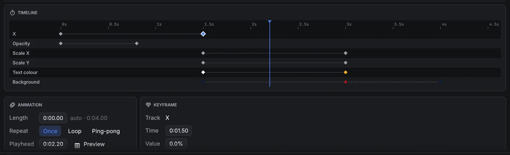
- Añadir pista elige una propiedad. Su primer fotograma clave queda en el cabezal y no cambia nada, así que después puedes poner los valores que quieras.
- Línea de tiempo: haz clic en la regla o en una fila para mover el cabezal. Haz clic en un fotograma clave para seleccionarlo y arrástralo de lado para cambiar su tiempo. Haz doble clic en una fila para añadir un fotograma clave ahí.
- Tarjeta Fotograma clave: el tiempo y el valor de la clave seleccionada, y Después, que indica cómo pasa el valor a la clave siguiente: Mantener (se queda y luego salta), Lineal, Entrada suave, Salida suave, Entrada y salida suaves o una Curva personalizada (una Bézier cúbica, escrita como en CSS: x1 y1 x2 y2). Fotograma clave en el cabezal añade una clave con el valor que tiene la pista en el cabezal.
- Duración es una pasada de la animación; 0 significa que termina en el último fotograma clave. Una línea ámbar discontinua la marca en la línea de tiempo. Repetir: Una vez mantiene los últimos valores, Bucle vuelve a empezar, Ping-pong va hacia delante y luego hacia atrás.
- Activa Vista previa para ver la capa en la vista previa de geometría tal como está en el cabezal. Un contorno discontinuo muestra la posición propia de la cue.
| Propiedad | Valor | Cómo se combina con la cue |
|---|---|---|
| X · Y | % del escenario | Se suma a la posición de la pestaña Geometría. |
| Escala X · Escala Y | % | Multiplica la escala de la pestaña Geometría: 200% la duplica. |
| Rotación | grados | Se suma a la rotación. 360° es una vuelta completa. |
| Recorte izquierda · arriba · derecha · abajo | % de la imagen | Se suma al recorte. Anímalo para cortinillas y revelados. |
| Opacidad | % | Multiplica la opacidad de la cue. |
| Tinte | color | Multiplica los colores de la imagen. El blanco la deja igual. Un tinte solo puede oscurecer o recolorear: el blanco se convierte en el color del tinte y el negro sigue negro. |
| Color del texto · Color del contorno · Color de la sombra · Fondo | color (solo texto) | Sustituyen los colores de la pestaña Texto. |
Como los valores son relativos, una cue Fade o un cambio en la pestaña Geometría siguen moviendo o fundiendo toda la capa animada. Por ejemplo, una animación puede hacer que un logotipo suba y baje mientras una cue Fade lo desliza por el escenario.
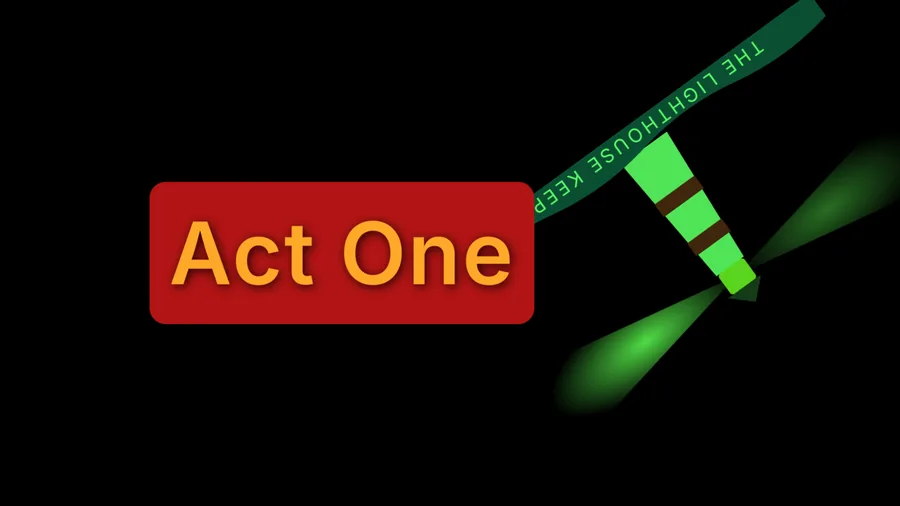
Las animaciones se calculan en directo mientras se dibuja el escenario: unas pocas operaciones por capa, con el movimiento, la escala y el color a cargo de la tarjeta gráfica. No se renderiza ni decodifica nada por adelantado, así que animar una capa cuesta lo mismo que mostrarla quieta. Los cambios que hagas aparecen al momento, incluso en una cue en marcha, a cualquier resolución de escenario. El desenfoque y los cambios de color son efectos de vídeo, que una cue Fade puede animar.
FX de vídeo
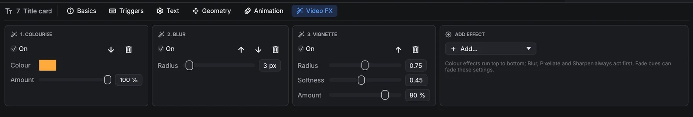
Las cues de vídeo, cámara y texto tienen una pestaña FX de vídeo, una pila de efectos sobre la imagen. Añádelos, reordénalos y actívalos como los efectos de audio. Los dibuja la tarjeta gráfica mientras dibuja el escenario, así que casi no cuestan nada y cambian en directo, incluso en una cue en marcha.
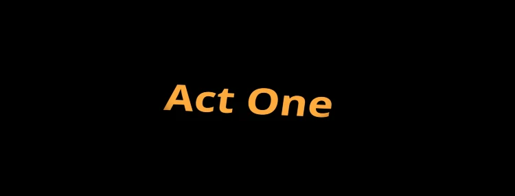
| Efecto | Ajustes |
|---|---|
| Controles de color | Brillo, contraste, saturación (0 = blanco y negro). |
| Exposición | Exposición en pasos, gamma. |
| Matiz | Gira todos los colores por la rueda de color. |
| Colorear | Monocromo en el color que elijas. |
| Sepia · Invertir | Cantidad. |
| Posterizar | Número de niveles por color. |
| Umbral | Corte a blanco y negro en un nivel de brillo. |
| Viñeta | Oscurece los bordes: radio, suavidad, cantidad. |
| Desenfoque · Pixelar · Enfocar | Radio o tamaño de bloque en los píxeles propios de la imagen. |
| Chroma key | Hace transparente un color (croma verde o azul en una cue de cámara): color clave, umbral, suavidad y derrame, que quita el reflejo verde de los bordes que quedan. |
Los efectos de color actúan de arriba abajo; Desenfoque, Pixelar y Enfocar cambian cómo se lee la imagen, así que siempre actúan primero. Los efectos se aplican después del tinte y la opacidad de la capa, y funcionan con todos los modos de fusión.
08Fundidos
Una cue Fade cambia otra cue mientras suena. Elige la cue de destino, la duración y la curva (lineal, en S o logarítmica), y marca lo que quieres cambiar:
- Nivel en dB, para audio y para bandas sonoras de vídeo.
- Opacidad, para vídeo y texto.
- Geometría: posición, escala, rotación y recorte. Parte de la geometría propia del destino, así que solo se mueven los valores que cambies.
- Efectos de vídeo: los ajustes de FX de vídeo del destino se copian en el fundido al marcarlo; cambia los valores hacia los que fundir. Un efecto apagado aquí se funde hacia fuera, y los efectos que el destino no tiene entran fundiendo desde nada. Tomar los efectos del destino los vuelve a copiar después de cambiar de destino.
- Objetos, para destinos en modo audio por objetos: las posiciones y la dispersión a las que mover los objetos, editadas en la misma vista de sala.
Marca Parar el destino para un fundido de salida: el destino se para al terminar el fundido. Pausar un fundido lo congela, y reanudarlo continúa con el tiempo que quedaba.
09Código de tiempo
OpenQ puede llevar una lista de cues a partir de código de tiempo SMPTE entrante, para un espectáculo sincronizado con un vídeo, el click de una banda o una mesa de luces. Lee LTC (código de tiempo como señal de audio) en una entrada de audio o MTC (MIDI Time Code) en una entrada MIDI, a 24, 25, 29,97 drop-frame o 30 fps.
Configurar una lista de cues
Haz clic derecho en la pestaña de la lista y elige Timecode…. Elige qué sigue la lista (LTC o MTC), la entrada de audio y el canal o la entrada MIDI por la que llega, y la frecuencia de fotogramas. La ventana muestra el código de tiempo que entra, y mientras esa lista está al frente la tarjeta de espera también lo muestra. Cada lista sigue su propia fuente, así que una lista puede seguir el LTC de la banda mientras otra se lleva a mano.
Disparadores por código de tiempo
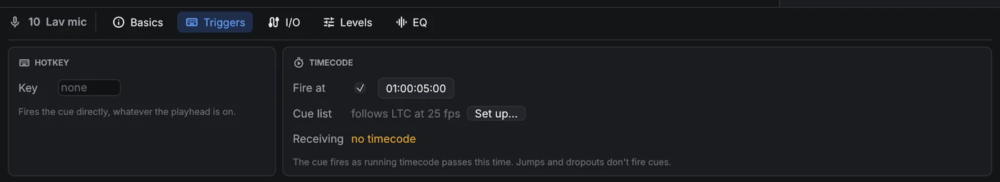
En la pestaña Disparadores de una cue, marca Disparar en y escribe el tiempo (hh:mm:ss:ff). Cuando el código de tiempo de la lista pasa por ese momento, la cue se dispara, esté donde esté el cabezal, y sus continuaciones funcionan como siempre. La pestaña muestra qué sigue la lista y qué está recibiendo; Configurar… abre los ajustes de código de tiempo de la lista.
Solo el código de tiempo que avanza dispara cues. Cuando la fuente salta (un locate o un rebobinado) o se para, no se dispara nada, y los disparos se retoman desde la nueva posición, así que ensayar una sección haciendo retroceder la fuente es seguro.
10Escenarios y proyección
Un escenario (stage) es una salida de vídeo, como un proyector o una pantalla. Añade escenarios en . Cada uno tiene un nombre y un tamaño de lienzo en píxeles.
Enviar un escenario a una pantalla
En , o con el desplegable Salida de Ajustes → Escenarios de vídeo, elige Ventana o una de las pantallas conectadas. Un escenario asignado a una pantalla se abre a pantalla completa en ella, y vuelve a abrirse allí al cargar el espectáculo. Si una pantalla no aparece, usa Actualizar pantallas. En una ventana de escenario, haz doble clic o pulsa F11 para alternar la pantalla completa.
Mapeado
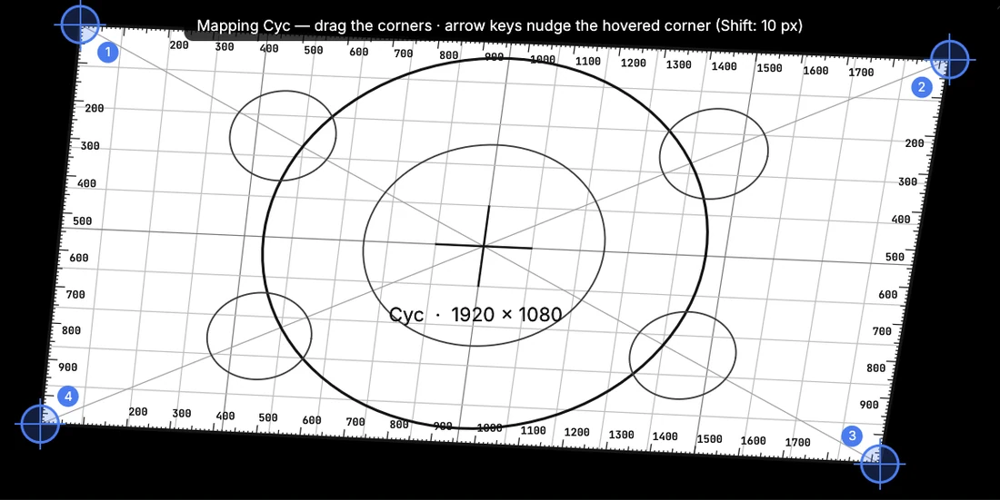
Editar mapeado muestra un patrón de ajuste en el escenario: un lienzo blanco con una cuadrícula cuadrada, reglas de píxeles en cada borde, círculos, diagonales y una cruz central, todo dibujado a través del mapping, además de cuatro esquinas numeradas. Arrastra las esquinas para encajar la imagen en la pantalla (corrección de trapecio), o pasa el ratón por una esquina y muévela con las flechas: un píxel cada vez, o diez con Mayús. Restablecer mapeado devuelve las esquinas a su sitio.
11Dispositivos remotos
Un segundo ordenador con OpenQ en la misma red puede seguir el espectáculo y llevarlo. Puede ser el portátil del regidor o una tableta en la mesa técnica. El ordenador que lleva el espectáculo es el dispositivo principal, y hace toda la reproducción. El otro dispositivo muestra su lista de cues, cabezal, cues en marcha y medidores, y le envía GO y otras órdenes.
Emparejar un dispositivo
- En el dispositivo principal, abre , marca
Dejar que se conecten los dispositivos emparejados y haz clic en Emparejar un dispositivo nuevo…. Aparece un código como
C9XR-E9HJ. - En el otro dispositivo, abre , haz clic en Buscar y elige el dispositivo principal. Si la búsqueda no encuentra nada, escribe su dirección, que aparece en la ventana Remoto del dispositivo principal.
- Introduce el código y haz clic en Conectar. A partir de la primera vez, conectar no necesita código.

Roles
| Rol | El dispositivo puede |
|---|---|
| Solo ver | Seguir el espectáculo: lista de cues, cabezal, cues en marcha y medidores. |
| Control | Además, pulsar GO, parar, pausar y reanudar, mover el cabezal e iniciar o parar cues sueltas. |
| Control y edición | Además, editar el espectáculo. Los cambios se guardan en el dispositivo principal. |
Ajusta el rol que reciben los dispositivos nuevos, y cambia el de cualquier dispositivo, en la ventana Remoto del dispositivo principal. Los cambios se aplican al momento. Quitar desconecta un dispositivo enseguida, y tiene que volver a emparejarse para reconectar. Cuando un dispositivo se desconecta, recupera su propio espectáculo. Los archivos de medios se quedan en el dispositivo principal, así que añádelos allí.
Las conexiones van cifradas y autenticadas. Un código de emparejamiento vale 5 minutos y 5 intentos, y quien grabe el tráfico de red no puede deducirlo a partir de la grabación. Después del emparejamiento, cada dispositivo entra con su propia clave secreta. Una dirección que falla una y otra vez se bloquea 5 minutos. La lista Actividad muestra las conexiones y los intentos rechazados.
El acceso remoto usa el puerto TCP 53200, y la búsqueda
usa el puerto UDP 53201. Un cortafuegos en el dispositivo principal tiene que permitir los dos. En una wifi de invitados
la búsqueda puede no encontrar nada; escribir la dirección sigue funcionando.
12OSC y cues de red
Activa Control remoto OSC en . Escucha en el puerto UDP 53000 por defecto. Las cues se identifican por su número.
| Dirección | Acción |
|---|---|
/go | GO |
/stop · /panic | Parar todo con el fundido · parar todo al instante |
/pause · /resume | Pausar todo · reanudar todo |
/playhead/next · /playhead/previous | Mover el cabezal |
/playhead/4.2 | Poner el cabezal en la cue 4.2 |
/cue/4.2/start | También stop, pause, resume, devamp |
Una cue Red envía un mensaje OSC a otros equipos. Ajusta el host, el puerto, la dirección
(por ejemplo /eos/cue/12/fire) y los argumentos. Los argumentos se separan con espacios: los números se envían como
números y el texto entre comillas como texto.
13Ajustes
, o el botón a la derecha de la barra de estado. Se guardan con el espectáculo, salvo el idioma, que es de cada ordenador.
| Pestaña | Ajustes |
|---|---|
| General | Idioma de la interfaz (español, gallego o inglés; cambia al momento), tiempo de fundido de Parar todo, protección contra doble GO, volumen general, OSC activado y puerto. |
| Audio | Dispositivo de salida. Cambiarlo para toda la reproducción. Las matrices de enrutado apuntan a las salidas de este dispositivo. La sala para audio por objetos: los altavoces, dónde están y a qué salida va cada uno. |
| Escenarios de vídeo | Añadir y nombrar escenarios, tamaño del lienzo, pantalla de salida, pantalla completa, mapping. |
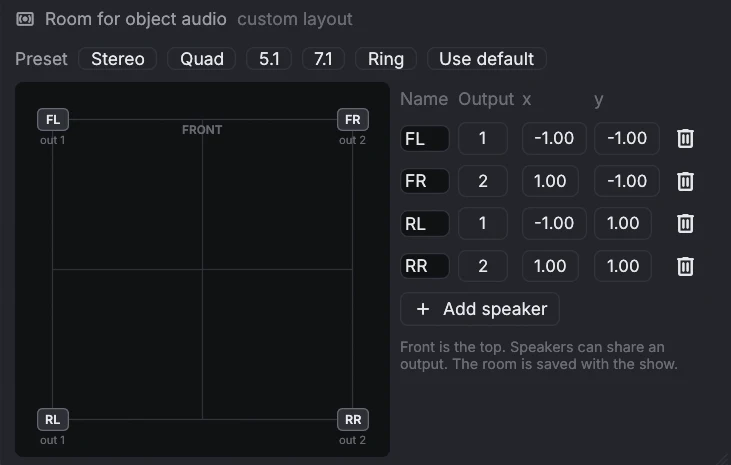
Mientras no la cambies, la sala sigue al dispositivo de salida: un par estéreo, cuadrafónico, 5.1 o 7.1 (sin altavoz en la salida LFE), o un anillo para otros números de canales. Los preajustes configuran esas salas, y Usar el predeterminado vuelve a seguir al dispositivo. El frente, donde está el escenario, queda arriba. Varios altavoces pueden compartir una salida.
Los ajustes de acceso remoto y las claves de los dispositivos pertenecen al ordenador, no al espectáculo. Están en
~/.config/openq/remote.json, legible solo por tu cuenta de usuario.
14Seguridad ante fallos
Un espectáculo tiene que seguir cuando algo sale mal. OpenQ mantiene los problemas lo más pequeños posible y recupera tu trabajo si llega a caerse.
Autoguardado y recuperación
Mientras un espectáculo tiene cambios sin guardar, OpenQ guarda una copia cada pocos segundos. Guardar el espectáculo, o salir con normalidad, borra la copia. Si OpenQ o el ordenador se caen, el siguiente arranque te ofrece la copia:
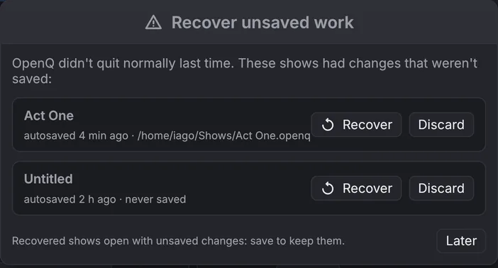
- Recuperar abre la copia con los cambios sin guardar. Guárdala para conservarlos (se guarda en el propio archivo del espectáculo).
- Descartar borra la copia para siempre.
- Más tarde cierra la ventana; vuelve a preguntar la próxima vez.
Guardar un espectáculo escribe primero un archivo temporal y lo pone en su lugar cuando ya está a salvo en el disco, así que un fallo o un corte de luz durante el guardado deja intacta la versión anterior.
Cuando algo falla durante una función
| Qué pasa | Qué hace OpenQ |
|---|---|
| El dispositivo de audio desaparece (desconectado, servidor de audio reiniciado) | Sus sonidos se paran y la barra de estado muestra audio perdido · reconectando…. OpenQ intenta abrir el mismo dispositivo cada 2 segundos y sigue en cuanto vuelve. El vídeo y las demás cues siguen funcionando. |
| Un archivo de medios está dañado | Esa cue termina con un error en ; todas las demás cues siguen sonando. |
| Un error interno en el motor de cues | Todas las cues se paran a la vez, el cabezal se queda donde estaba y el registro explica qué pasó. El siguiente GO funciona como siempre. |
| Una cue se inicia a sí misma en un bucle sin tiempo (una cue Iniciar que apunta a sí misma, o dos que se apuntan entre sí) | Se retiene y el registro nombra la cue, en lugar de ralentizar todo el espectáculo. |
| Más de 256 sonidos a la vez | Las cues de audio adicionales se rechazan con un error en el registro. |
Los autoguardados y los informes de fallos están en la carpeta de ajustes de OpenQ: ~/.config/openq en Linux,
~/Library/Application Support/OpenQ en macOS, %APPDATA%\OpenQ en Windows, en
recovery y crash. Un informe de fallo contiene qué salió mal y dónde; adjúntalo, por favor,
cuando informes de un problema.
Registro de errores. Cada aviso y error (entradas del registro del motor, fallos de dispositivos, guardados o
aperturas fallidos, caídas) también se escribe, con la fecha y la hora en UTC, en logs/openq.log dentro de la misma
carpeta, para que puedas revisarlo después de la función. lo abre. Cuando supera
los 2 MB, se mueve a openq.old.log la próxima vez que arranca OpenQ.
15Atajos de teclado
| Teclas | Acción |
|---|---|
| Espacio | GO |
| Esc | Parar todo (con fundido); pulsa otra vez para parar al instante. También cancela una edición en una fila. |
| P / R | Pausar todo / reanudar todo |
| ↑ ↓ | Mover el cabezal |
| ← → | Plegar / desplegar un grupo |
| Ctrl+E | Cambiar entre modo edición y modo función |
| Intro | Renombrar en el sitio la cue seleccionada |
| Ctrl+1 … 0 | Nueva cue Audio, Vídeo, Grupo, Espera, Memo, Fade, Iniciar, Parar, Pausa, Ir a |
| Ctrl+D · Ctrl+G · Supr | Duplicar · agrupar la selección · borrar |
| Ctrl+Z · Ctrl+Mayús+Z | Deshacer · rehacer (hasta 200 pasos; los espectáculos muy grandes guardan menos, al menos 10, para ahorrar memoria) |
| Ctrl+N / O / S / Mayús+S | Nuevo / abrir / guardar / guardar como |
| F1 | Abrir este manual de usuario |
| F11 | Pantalla completa, en una ventana de escenario |
| ← → ↑ ↓ (+Mayús) | Mover 1 (10) píxeles la esquina bajo el ratón al hacer mapping |
| Atajo de la cue | Dispara esa cue directamente (se ajusta en la pestaña Disparadores) |
16Solución de problemas
| Problema | Prueba |
|---|---|
| No hay sonido | Mira la barra de estado. Si dice sin audio, elige otro dispositivo en Ajustes → Audio. Comprueba el volumen maestro y el nivel y el enrutado de la cue. |
| Una cue Micro no suena | Comprueba el dispositivo de entrada y los canales en su pestaña I/O; la barra de nivel muestra si llega algo. En macOS y Windows, OpenQ necesita permiso para usar el micrófono. |
| Los disparadores por código de tiempo no se disparan | Abre la ventana Timecode… de la lista y comprueba que recibe código de tiempo a la frecuencia correcta. Las cues solo se disparan mientras el código avanza por su tiempo de disparo. |
| Una cue Cámara no muestra nada | Comprueba el dispositivo en su pestaña Cámara (usa para volver a buscar) y el registro del motor. Otro programa que use la cámara puede bloquearla. |
| Una cue muestra un icono rojo | Su archivo de medios falta o no se puede leer, o se borró su cue de destino. Si el archivo se movió, haz clic en Examinar… en la pestaña Básico de la cue para encontrarlo de nuevo. Tras reconectar una unidad, dale unos dos segundos para que desaparezca. |
| Un vídeo no aparece | Abre la ventana del escenario desde el menú Vídeo. Comprueba el escenario, la opacidad y la capa de la cue, y busca errores del decodificador en . Una tarjeta gráfica solo puede mostrar imágenes hasta cierto tamaño (a menudo 8192 o 16384 píxeles de ancho). OpenQ reduce imágenes fijas, SVG y texto para que quepan, pero una película mayor se queda fuera: conviértela a un tamaño menor. |
| La barra de estado dice audio perdido · reconectando… | El dispositivo de audio desapareció. Vuelve a conectarlo o reinicia el servicio de audio; OpenQ se reconecta solo. Para usar otro dispositivo, elígelo en Ajustes → Audio. |
| OpenQ pide recuperar trabajo sin guardar | La última vez no se cerró con normalidad. Ver Seguridad ante fallos. |
| GO parece no hacer nada | La cue bajo el cabezal puede estar desarmada, o la segunda pulsación puede haber llegado dentro de la protección contra doble GO. |
| Un dispositivo remoto no encuentra el principal | Asegúrate de que el acceso remoto está activado y de que los dos están en la misma red, y escribe la dirección que aparece en el dispositivo principal. |
| "Pair this device again" (remoto) | El dispositivo se quitó en el principal, o se olvidó su clave. Abre el emparejamiento en el dispositivo principal e introduce el código nuevo. |
| Algo falla y no sabes por qué | Abre : cada aviso, error y caída queda allí con su hora. |
17Licencia y créditos
OpenQ se distribuye bajo la Apache License 2.0. Este resumen es orientativo; el texto en inglés es el que vale.
| Puedes | Debes |
|---|---|
Usar OpenQ para cualquier cosa, también comercial: hacer funciones, conciertos, giras, eventos e instalaciones de pago,
y cobrar por programarlos u operarlos. Copiarlo, modificarlo y compartirlo, conservando el aviso de copyright,
LICENSE.md y NOTICE.md. Vender copias, versiones
modificadas o servicios basados en él. |
Conservar el aviso de copyright, LICENSE.md y NOTICE.md en cada copia, e indicar
en los archivos que modifiques que han cambiado. La licencia no da derecho a usar el nombre OpenQ como marca. |
Copyright 2026 Iago Núñez — OpenQ (https://github.com/iagonunez/OpenQ) muestra la versión, la licencia y todos los avisos de terceros.
Son las fuentes (Inter, JetBrains Mono y Barlow Condensed bajo la SIL Open Font License; Material Symbols bajo Apache 2.0; las
fuentes incluidas en egui) y las bibliotecas Rust de código abierto con las que se construye OpenQ, cada una con su propia
licencia. Los mismos textos están en NOTICE.md y THIRD_PARTY_LICENSES.md junto al programa.
OpenQ reproduce vídeo con las bibliotecas FFmpeg. En Windows y
macOS el instalador pone dentro de OpenQ una compilación sin partes GPL, con su licencia en la carpeta Licenses;
en Linux OpenQ usa el FFmpeg del sistema. FFmpeg tiene su propia licencia. Si pasas un OpenQ compilado a otras personas, usa
un FFmpeg sin partes GPL, o la GPL 3 cubrirá todo el programa. Ver NOTICE.md.